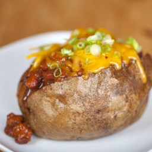

Glorious Baked Potato

Description
Baked potatos are a criminally under-rated dish. Viewed with scorn by those with discerning palletes, the humble potato has the power to rise through the ranks of dishes to become king of them all ... if the following recipe is followed!
Ingredients
- potato
- strong cheddar cheese
- butter
- tuna
- salt
- pepper
- oil
Steps
- Use a fork to prick the skin of the potato
- Rub a healthy dose of oil and a sprinkle of salt onto the potato skin
- Place the potato into a hot oven (200C should do the trick)
- Periodically check on the potato to turn it over (every 30 minutes or so)
- Once the potato has a crispy skin all over, check the inside by pricking with a fork - if it enters easily, the potato is done
- Cut the skin of the potato into quarters (be careful not to cut all the way through)
- Scoop out the insides and place into a bowl
- Grate the cheddar cheese and put the tuna and butter into the bowl
- Mash the potato, cheese, butter and tuna together to make a delicious calorific mess
- Scoop the new cheesy mash back into the skins and place in the oven for another 5-10 minutes
- Remove the potato from the oven and serve with your choice of salad
- Enjoy!